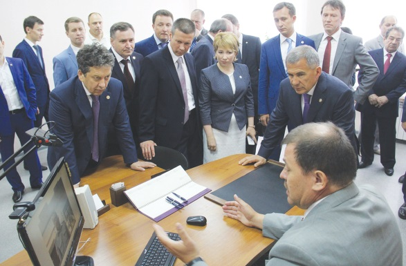

У мировых судей - новоселье
Альметьевск

24 июня в обновлённом после ремонта здании по улице Фахретдина, 56а открылось здание мировых судей.
Подробнее
Ремонтные работы проводились в рамках исполнения государственной программы "Развитие юстиции в Республике Татарстан на 2014 - 2020 годы". Президент РТ Рустам Миниханнов сказал: "Сегодня мы посетили одно из самых грамотно организованных зданий мировых судей. Их удобное размещение - это создание условий не только для работы для них самих, но и для граждан нашей республики. В правовом государстве каждый из нас обращается к вам за помощью, чтобы получить защиту закона. Я считаю, что в Альметьевске благодаря Республике, компании Татнефть, местной власти создано прекрасное здание для мировых судей, и это будет залогом стабильности и гарантии закона".